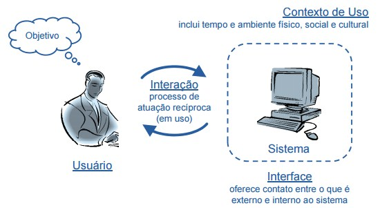
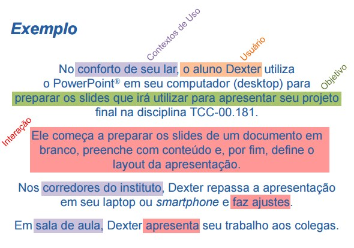

Situação Típica de Uso

Usuário
- Indivíduo engajado num processo de interação
- Busca alcançar um objetivo
- Meios de comunicação
Contexto de Uso
- Caracterizado por toda situação do usuário relevante para sua interação
- Momento de utilização de sistema (quando)
- Ambiente físico, social e cultural em que ocorre a interação (onde)
Exemplo

Considerações no Design e Avaliação de um Sistema de Edição de Slides
O contexto de uso pode mudar:
- Conforto do lar (ambiente tranqüilo)
- Corredores do instituto (ambiente com interrupções)
- Sala de aula (situação tensa)
A interface e o processo de interação podem mudar:
- Computador desktop (mouse, teclado e monitor)
- Laptop (teclado, touchpad e monitor menor)
- Smatphone (touchscreen, acelerômetros e monitor ainda menor)
- Monitor ou projetor multimídia